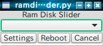
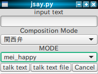
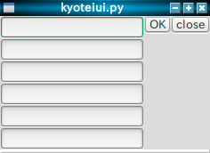
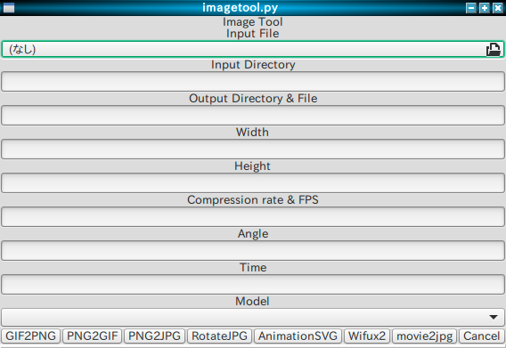

1. Viper Tools¶
様々な機能を追加するためのPythonアプリです。
- 実行ファイル「vipertools.x」を同梱しました。これをダブルクリックする事でツールを起動させられます。
- 競艇予想や数字選択式宝くじ予想機能
- Ubuntu系LinuxディストリビューションをオリジナルのLinuxディストリビューションである「Phantom Valkyrie Linux」のデスクトップ環境に変換する機能
- OpenJtalkを使ってコンピューターを喋らせる機能
- tmpfsのRAMDISK量の調整機能
- アニメーションGIFのようなアニメーションSVG、APNGを作成する機能
- Ubuntu系Linuxディストリビューション対応のアプリケーションのインストール
- オリジナルOS「Phantom Valkyrie Linux」などのUbuntu系Linuxディストリビューションのリマスター機能「Valkyrie Builder」（リマスターツール「Ubuntu Builder」をベースにGUI部分をGambas2からGlade(gtk+3)に変更）。各種情報を入力し、解凍したいISOを指定後に「Settings」ボタンを押します。その後、「Extract」ボタンを押す事で解凍が始まり、リマスターを行えます。リマスター作業が終われば、「Build」ボタンでビルドをします。
- ChromiumにGoogle Chrome内蔵のWidevineを入れる事が出来る「install widevine」機能
- カスタムカーネルのビルド機能
1.1. Viper Tools動作環境¶
Ubuntu 16.04 LTS以降のUbuntu系Linuxディストリビューション
Python3.5,Python2.7,シェルスクリプト
gtk+3,gtk+2
libglade
1.2. Viper ToolsをGUIツールとして起動させる¶
Viper Toolsは、Pythonで開発しており、Pythonやシェルスクリプトやgtk2+,gtk+3がインストールされている環境下で動作します。
その為、Viper Toolsは、GUIツールとしても、Pythonモジュールとしても動作させられます。
Viper ToolsをGUIで動作させるには、以下のように端末から起動させます。 Ubuntu系Linuxディストリビューションでは、desktopファイルでアプリケーションを起動させるショートカットを作る事が出来ます。 そのdesktopファイルのexecの箇所にコマンドを記述しても構いません。 fbpanelなどのタスクバーアプリケーションの場合でも、コマンドを記述しておく事で起動させられます。
viper.zipを解凍して、出来たフォルダ「viper」の直下にvipertools.pyというPythonファイルとvipertoolsというシェルスクリプトファイルがあります。シェルスクリプトファイルで起動させる場合は、xfce4-terminalをインストールしておいてください。:
$python vipertools.py
あるいは、:
$./vipertools
vipertools.pyを起動させると、アプリケーションの一括インストールを行えたり、Ubuntu LTSをベースにリマスター出来たり、オリジナルOS「Valkyrie SRX」に変換したりという事が出来ます。
コンピューターを喋らせたり、動画をコマ毎の画像に変換したり、アニメーションSVGを作成したり、MPEG4/AVC+MP3の動画にエンコードしたりも出来ます。
フォルダに入っている画像ファイルを色々と変換させる事も出来ます。
vipertools.xは、シェルスクリプトを実行ファイルにしたものです。
これをダブルクリックしてもアプリケーションを起動させられます。
1.3. カスタムカーネル「PVL kernel」をビルドする¶
カスタムカーネル「PVL kernel」をビルドする機能で、カスタムカーネルは2種類のフレーバーがあります。
・PVL kernel -prjc ー CPUスケジューラーにBMQ、I/OスケジューラーにKyberを使用。高レスポンス性とハイパフォーマンス性能を持つカーネルです。
・VSRX kernel -ck1 ー CPUスケジューラーにMuQSS、I/OスケジューラーにKyberを使用。高レスポンス性とハイパフォーマンス性能を持つカーネルです。
2種類のカスタムカーネルは、レスポンス性能やパフォーマンス性能を向上させる様々なサードパーティー性のパッチを適用しています。
カスタムカーネル機能は半自動でカーネルをビルドする事が出来ます。
1.4. Ubuntu系ディストリビューションをリマスターする¶
各種情報を入力し、解凍したいISOを指定後に「Settings」ボタンを押します。
その後、「Extract」ボタンを押す事で解凍が始まり、リマスターを行えます。
リマスター作業が終われば、「Build」ボタンでビルドをします。
1.5. システム起動音声を切り替える機能¶
「Change to the lightweight desktop enviroment」の項目を使いますと、私が開発したLinuxディストリビューション「Phantom Valkyrie Linux」と同等のデスクトップ環境を構築する事が出来ます。
Valkyrie SRXには、起動時に女性の声を使った起動音が鳴るようになっています。
このシステム起動音を切り替えるのが『ログインサウンド「イオリ」に変更』『ログインサウンド「メイドイオリ」に変更』『ログインサウンド「SFイオリ」に変更』という項目です。
1.6. tmpfs RAMDisk Slider¶
tmpfsのRAMディスクの容量を変更出来ます。
1.7. コンピューターに喋らせる機能¶
テキストフォームに入力する事でコンピューターに喋らせる事が出来ます。
1.8. 数字式宝くじ（ナンバーズ）予想機能¶
みずほ銀行のWebサイトの当選結果ページをダウンロードする機能、そのページをパースして、当選結果をPythonのリストに変換して保存する機能、リストを使って予想する機能で構成されています。
「ナンバーズデータダウンロード」、「ナンバーズリスト生成」、「ナンバーズ予想」の項目をそれぞれチェックしてOKボタンを押す事で機能を使えます。 予想した数字は、viper/numbersフォルダの直下にnumbers.txtというファイルが出来ていますので、これを見てください。
1.9. 競艇予想機能¶
選手のデータはSQLiteで構築しており、viper/kyotei/kyotei.sqliteで保存されています。
出力された結果は、そのままでは当たらない事が多いので、3連単で選ぶ例を示しておきます。 順位はこのスクリプトで出した指数順位
1.10. Image tool機能¶
1.10.1. アニメーションSVG機能¶
アニメーションGIFのような動画ファイルをSVGを使って再現した物がアニメーションSVGです。 一般的に呼ばれているアニメーションSVGは、ここで作成する物とは違う物です。 TumblrなどでアニメーションGIFを公開しているケースが多いですが、256色の色制限などがあります。 ベクターグラフィックスのSVGには、パラパラアニメを実現する機能が搭載されています。 これを使って、アニメーションSVGを作ることが可能です。 このPythonスクリプトは、連番になっている画像ファイルを一つのフォルダにまとめておいて、コマンドでアニメーションSVGを生成するものです。
filenameフォームでJPEG連番画像が入っているディレクトリを指定し、WidthとHeightで画像の幅と高さを指定します。
Timeで速度を変更する事が可能です。
ここでは画像フォルダを「test」とし、出力する画像サイズは640x480とします。
速度を変更したい場合は、３つ目の引数でアニメーションの実行時間を変更します。
ここでは5秒でアニメーションが終わるように設定しています。
これで同じディレクトリに「test.svg」が生成されます。
1.10.2. APNGを作成する機能¶
アニメーションするPNG画像を作成する機能です。
1.10.3. PNG画像を一括でJPEGにする¶
複数のPNG画像を一括でJPEG画像に変換します。
ここでは、PNG画像をまとめたフォルダを「inputdir」、JPEG画像をまとめたフォルダを「outputdir」とします。
1.10.4. PNG画像を一括でGIFにする¶
複数のPNG画像を一括でGIF画像に変換します。
ここでは、PNG画像をまとめたフォルダを「inputdir」、GIF画像をまとめたフォルダを「outputdir」とします。
1.10.5. GIF画像を一括でPNGにする¶
複数のGIF画像を一括でPNG画像に変換します。
ここでは、GIF画像をまとめたフォルダを「inputdir」、PNG画像をまとめたフォルダを「outputdir」とします。
1.10.6. JPEG画像を一括で回転させて保存する¶
一括でJPEG画像を任意の角度に回転させます。
1.10.7. 動画エンコード¶
ffmpegを使って、動画エンコードを行えます。
GUIでエンコードしたいソース、出力ファイル名、動画の解像度を入力します。
動画コーデックをH.264/AVCとH.265/HEVC、音声コーデックをAACという構成の動画ファイルを作成する事を目的にしています。QSVなどのハードウェアエンコードにも対応しています。
1.10.8. wifu2x.pyによる拡大機能¶
深層畳み込みニューラルネットワークを活用して、二次元画像を超解像技術で画像を拡大します。
1.10.9. ChromiumにGoogle Chrome内蔵のWidevineを入れる¶
最近のGoogle Chromeには、Widevineプラグインと呼ばれるデジタル著作権管理されているコンテンツを見る為のプラグインを搭載しています。
Chromiumには搭載していないので、これをGoogle Chromeから抜き出してChromiumでも使えるようにしようという機能を搭載しています。
但し、これを使っても完全にオンデマンドサービスで公開されている映像コンテンツが視聴出来るわけではありませんので注意してください。